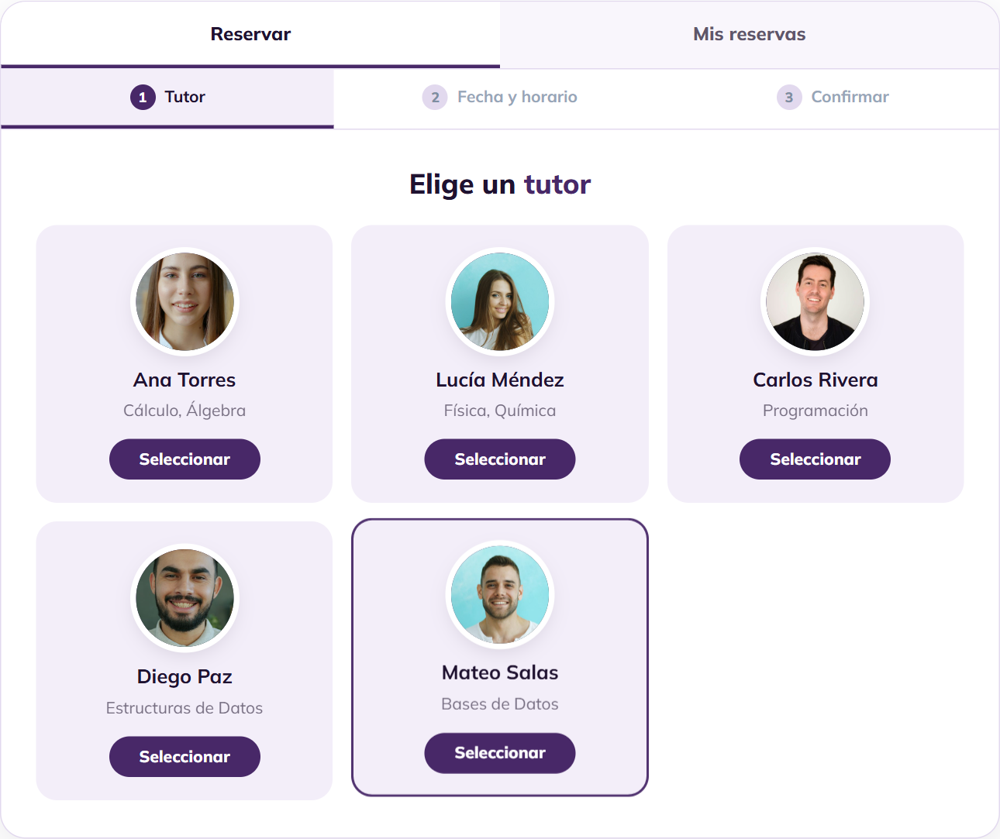
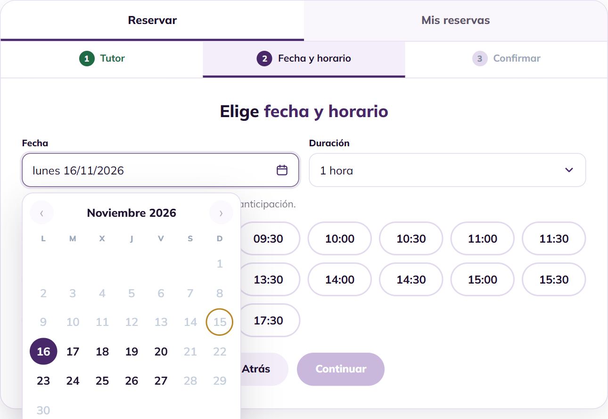
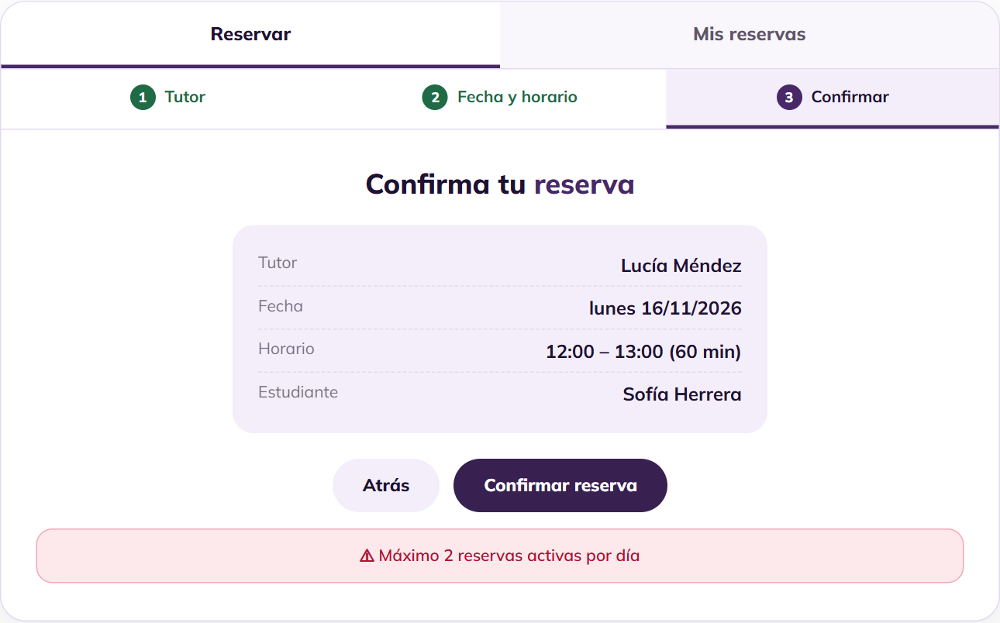
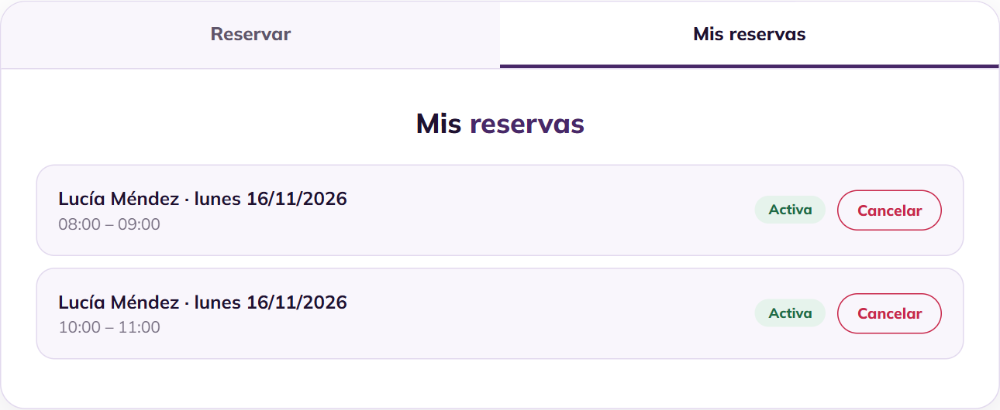
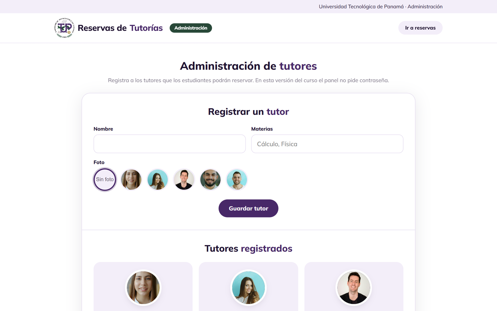
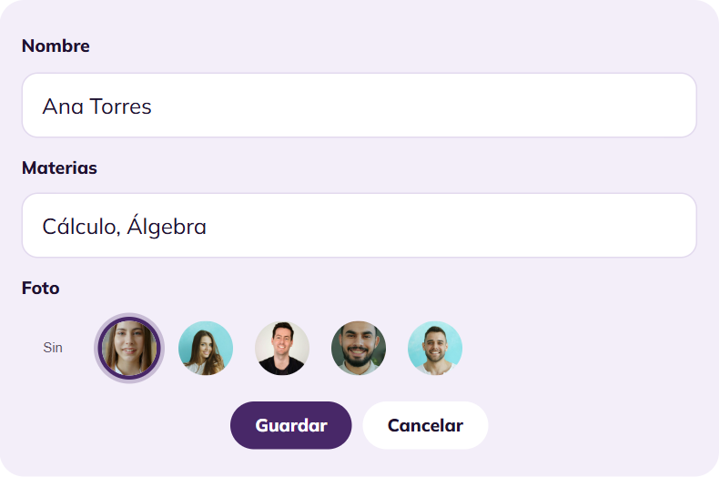

Reservas de Tutorías
Del resultado esperado al valor para el estudiante: ODD → SDD → código → pruebas.
Universidad Tecnológica de Panamá
Prof. Regis Rivera
Seis resultados, cada uno con indicador
Eliminar cruces de horario
Indicador0 reservas solapadas en el sistema
Encontrar espacios sin pedirle al tutor
IndicadorDisponibilidad por tutor y fecha en una sola consulta
Reservar y cancelar en pocos pasos
IndicadorReservar = 1 solicitud; cancelar = 1 solicitud
Recuperar lo cancelado
IndicadorUn horario cancelado vuelve a figurar como disponible
Reglas claras y verificables
IndicadorCada regla de negocio tiene prueba automatizada
Catálogo de tutores sin ayuda técnica
IndicadorAlta, edición y baja de un tutor en ≤ 3 clics
También en specs/ architecture data-model api — y en docs/: ai-log decisions testing
Trazabilidad: O1→ RF4→ RN1→ CA2→ test_ca2_no_doble_reserva_tutor
Doce reglas, todas verificables
La lógica vive en un solo lugar
La pantalla no duplica reglas. Muestra el mensaje que devuelve el servicio.
Reloj inyectable: las reglas de tiempo se prueban sin esperar.
Sin carreras: transacción inmediata + candado para la no doble reserva.
Reservar en cuatro pasos
- Ingresa con su correoSin contraseña; si es nuevo, se registra
- Elige un tutorFoto, nombre y materias
- Fecha y horario libresCalendario con las reglas aplicadas
- ConfirmaResumen antes de reservar

El calendario ya conoce las reglas

RN3, RN5, RN11: sin fines de semana, sin pasado, máximo 14 días.

RN6: la tercera reserva del día se rechaza con un mensaje claro, en rojo.
Cancelar libera el espacio
Un clic y una confirmación. El horario vuelve a figurar como disponible para otro estudiante.

Un panel solo para quien administra
Alta, edición y baja de tutores con foto.
No se puede eliminar un tutor con reservas activas futuras: primero se cancelan.
Pendiente: autenticación del panel (mejora futura).


Cuando cambia el requisito, el proceso no se rompe
Dos cambios reales en el repositorio: CE1 y CE2, cada uno con su rama y su Pull Request.
31080d1spec(CE1)RN10, CA12–CA13, plan y APIb8292cffeat(CE1)validación en service.pyb2ba843test(CE1)CA12–CA13 · 24 en verdePR #4revisión y mergerevisado y fusionado por Urielbusiness-rules RN10 · acceptance-criteria CA12–13 · implementation-plan fila 7 · api 422 al cancelar · service.py · test_booking_rules.py6cd6367spec(CE2)RN11, CA14–15, plan9d70df4pruebas rojas2 fallan: CA15 y bordecb36367feat(CE2)27 en verde0f6ccberesultadosfila 8 del plan ✅4e346daprueba HTTP422 · 28 en verdePR #8merge a mainmain: 34 en verdebusiness-rules RN11 · acceptance-criteria CA14–15 · implementation-plan fila 8 · api 422 · decisions · service.py · test_ce2_anticipacion.py- No doble reserva con 10 hilostest_concurrency: compiten por el mismo horario, gana uno solo
- Una prueba por regla de negocioRN1–RN12, incluidos los bordes exactos de tiempo
- Criterios de aceptación CA1–CA27cada criterio de la especificación tiene su prueba
- Conflictos y validaciones por HTTP409 por conflicto, 422 por regla, 404 por inexistente
Nada llega a main sin revisión
La IA propone, el equipo decide
| Actividad | IA | Resultado | Decisión del equipo |
|---|---|---|---|
| Especificaciones ODD/SDD | Claude | outcomes, requisitos, reglas, criterios | Aceptado y revisado por el equipo |
| Pruebas de concurrencia | Claude | 10 hilos sobre el mismo horario | Se corrigió un error de hilos en el servicio |
| Revisión del PR #4 | Claude Code (agentes) | 5 observaciones | Atendidas en el ciclo de QA |
| Interfaz web | Claude Code | Pantalla del estudiante y panel de admin | El alta de tutores se movió al administrador; errores siempre en rojo |
Tres personas, roles que rotan
González Crespin
- Ciclo 1Spec y base + CE1
- Ciclo 2Architecture / Dev
Reyna
- Ciclo 1QA / DevOps
- Ciclo 2Product / Spec
Portela
- Ciclo 1Integrante del equipo
- Ciclo 2QA / DevOps
¿Y si el profesor pide un cambio ahora?
Lo ensayamos: máximo 3 horas de tutoría por estudiante por semana.
- Regla nueva en
business-rulesRN13 - Criterios CA28–CA30Dado / Cuando / Entonces
- Pruebas nuevas, primero en rojo4 pruebas, 1 falla a propósito
- Código en
service.pyuna sola función - Resultado: 59 pruebas en verde55 anteriores + 4 nuevas
Del problema al valor, con evidencia
¡Gracias! · Preguntas
github.com/fabianagcre/tutorias-reservas